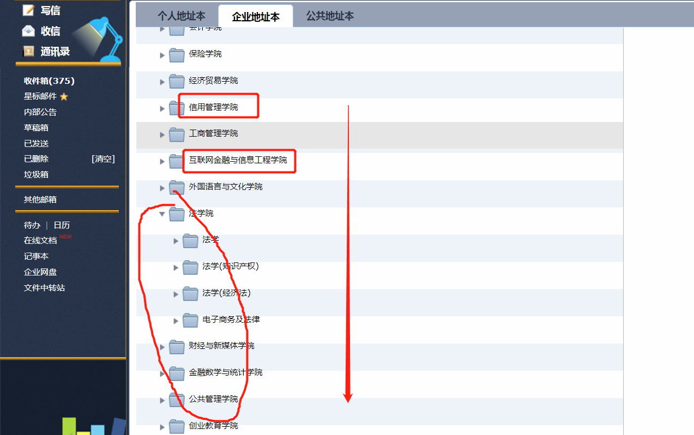
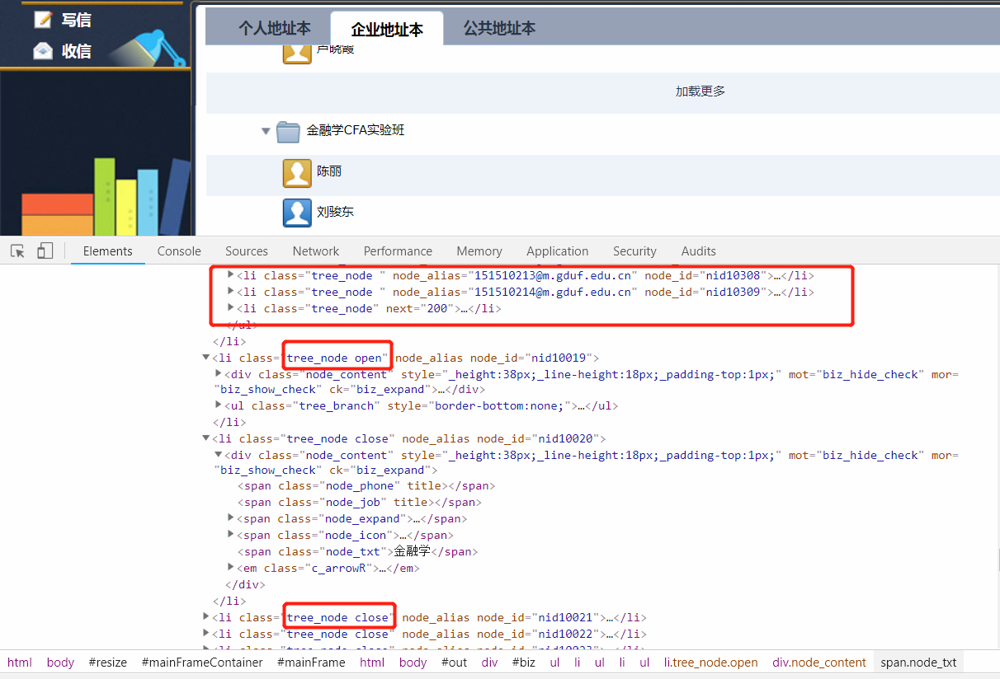
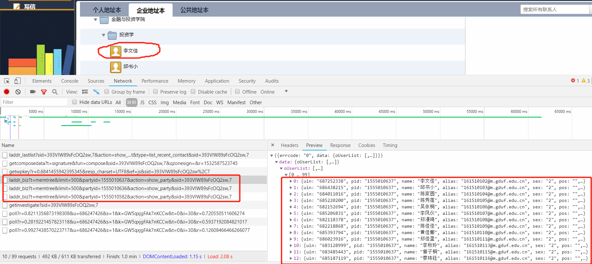
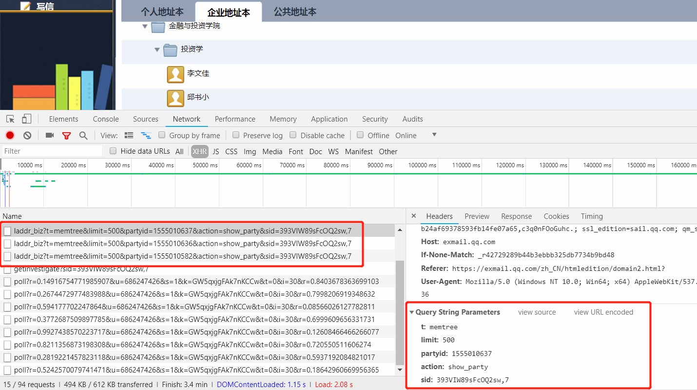
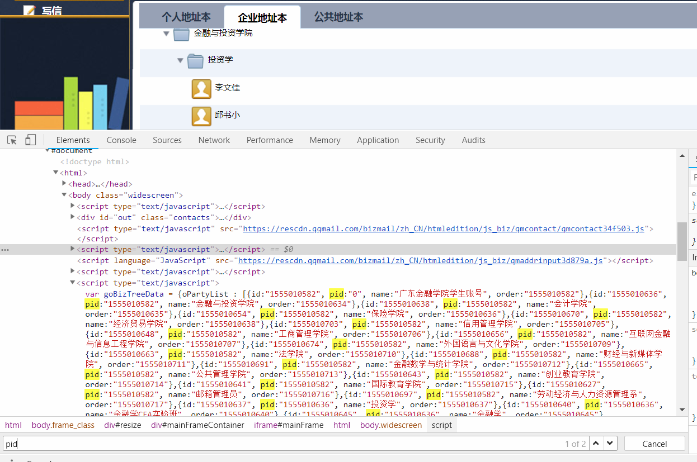
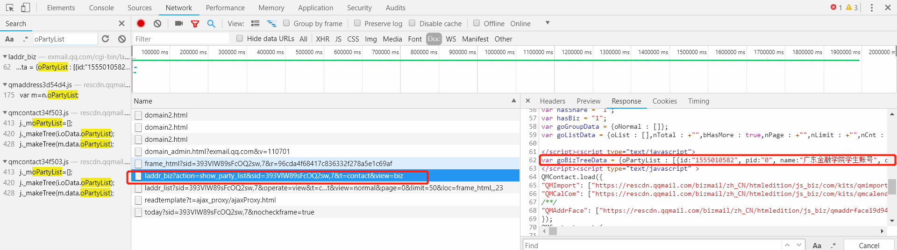
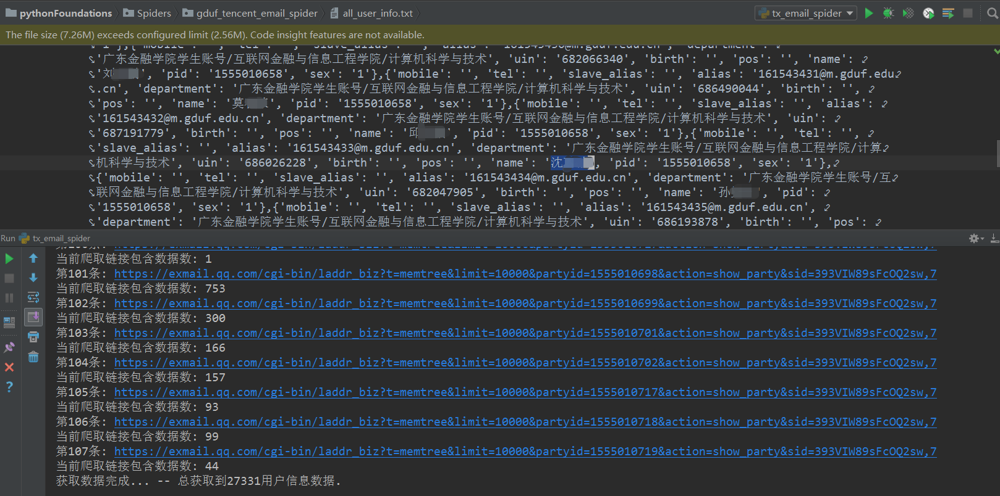

简单使用python request + re 爬取校内邮箱通信录(腾讯企业邮箱)的用户信息数据。
一、分析需要爬取的数据
通过手动打开浏览器，正常访问网站，判断需要爬取的数据是静态还是动态数据，制定不同的爬取方案。
1. 静态/动态 数据类型判断
登陆企业校内邮箱，可以看到需要获取的内容主要呈现在该页面:

F12打开控制台，查看Elements，可以很容易发现，用户数据在目录节点没有展开的情况下，html文档中并不会包含我们需要的数据，当点击展开目录节点后，才能获取到数据。

因此，可以判断，我们需要爬取的数据是动态生成的，可以初步认为是通过AJAX异步请求来从服务器端获取数据的。
2. 数据定位
我们已经知道了需要爬取的数据是动态生成的，这时，同样F12打开控制台，到Network栏目下，查找类型为XHR(AJAX的请求链接)的请求链接，并按数据文件大小从到小排序，再次刷新页面，点击通讯录栏目，展开到具体的用户项，依次点击XHR以确定需要的数据是通过哪个链接获取的：

可以看到，请求链接格式为:https://exmail.qq.com/cgi-bin/laddr_biz?t=memtree&limit={limit}&partyid={pid}&action=show_party&sid={sid},参数有 -
| Argument | Description |
|---|
| t | 取值不变,memtree，具体含义就不管了 |
| limit | 链接中取值:500,单次获取用户的最大数量，
我们可以自己修改，再次发起请求来验证 |
| partyid | 变化值，为所属组的id,例如：
学生 -> 专业 -> 院系
学生所属专业partyid就是的专业的id,etc. |
| action | 在此链接中不变，取值:show_party |
| sid | 用户登陆后生成的sid值，访问过程中不变 |

通过上面的分析，我们可以知道，要获取所有学生的信息，主要是在获取所有的专业的id后，依次作为上面链接的partyid来发起请求即可。
尝试在html Elements文档中搜索，能够搜到相应的数据，但它也是动态生成的 -

继续在Network中将过滤类型设置为doc同时按文件大小排序，查找包含oPartyList的文件 -

到此，我们所有的分析任务已经结束了，接下来只需要编写相应的爬虫程序即可。
二、爬虫程序设计
这里只是编写一个简单的爬虫程序，不使用IP代理，爬虫发起请求所需的sid通过用户自己登陆后手动获取，相应的cookie也是如此。
1. 获取所有专业的id
上面分析提到的，要获取用户数据，主要是要先获取到用户所在的组idpartyid。
1
2
3
4
5
6
7
8
9
10
11
12
13
14
15
16
17
18
19
20
21
| def getAllPID():
"""
获取所有的专业id,作为用户的pid.
"""
sid = 'xxx'
all_parties_url = 'https://exmail.qq.com/cgi-bin/laddr_biz?action=show_party_list&sid={sid}&t=contact&view=biz'.format(sid=sid)
cookies = dict(...)
request = request.get(all_parties_url,cookies=cookies)
regexp = r'{id:"(\S*?)", pid:"(\S*?)", name:"(\S*?)", order:"(\S*?)"}'
results = re.findall(regexp,text)
all_parties_ids = []
all_parties_info = dict()
root_party = None
for p in results:
all_parties_id.append(p[0])
party = dict(id=item[0], pid=item[1], name=item[2], order=item[3])
all_parties_info[item[0]] = party
if p[1] == 0 or p[1] == '0':
root_party = party
|
2. 获取学生信息数据
依次遍历pid列表，构造不同的pid不同的链接，来获取全部的通讯录内容。
1
2
3
4
5
6
7
8
9
10
11
12
13
14
15
16
17
18
19
20
21
22
23
| def getAllUserInfo():
...
获取所有通讯录用户信息
...
all_user_info = []
party_user_url = 'https://exmail.qq.com/cgi-bin/laddr_biz?t=memtree&limit={limit}'\
'&partyid={pid}&action=show_party&sid={sid}'
regexp = r'{uin:"(\S*?)", pid:"(\S*?)", alias:"(\S*?)", sex:"(\S*?), pos:"(\S*?)", tel:"(\S*?)",'\
' birth:"(\S*?)(\S*?)(\S*?)(\S*?)", slave_alias:"(\S*?)(\S*?)(\S*?)", department:"(\S*?)(\S*?)", mobile:"(\S*?)"}'
for pid in all_parites_ids:
url = party_user_url.format(limit=limit, pid=pid, sid=sid)
request = requests.get(url, cookies=cookies)
text = request.text
results = re.findall(regexp, text)
for item in results:
user = dict(uin=item[0], pid=item[1], name=item[2], alias=item[3], sex=item[4],
pos=item[5], tel=item[6],birth=item[7], slave_alias=item[8], department=item[9],
mobile=item[10])
all_user_info.append(user)
|
完整的程序，请移步到Github查看.
三、爬取结果
